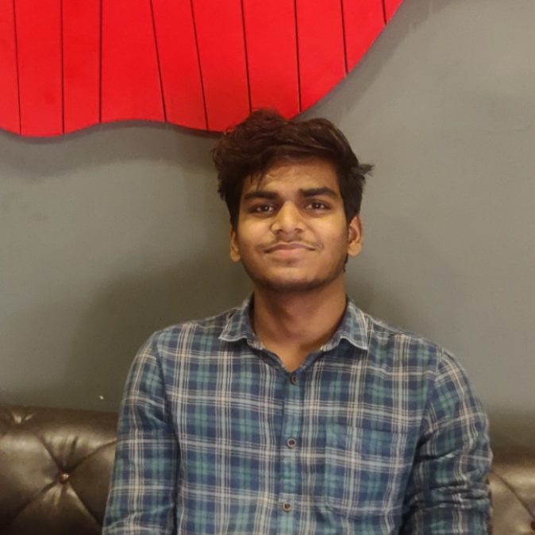

Focused on Autonomous Agent Orchestration and Distributed LLM Infrastructure. Building production-scale AI at the frontier of reasoning, multi-modal retrieval, and high-performance inference. Where systems research meets real-world deployment.

High-performance inference backbone for heterogeneous LLM deployments. Integrates llms_ground and llamacpp with dynamic quantization kernels and speculative decoding pipelines for maximum throughput.
Core InfrastructureMulti-agent orchestration framework for autonomous task solving. Hierarchical reasoning with LangGraph-based state machines enables stateful, tool-using agent collaboration across long-horizon tasks.
Agentic AIKubernetes-native AI platform toolkit deployed on GKE. Unified request routing, zero-trust service mesh, Keycloak auth, and intelligent model selection across multi-tenant inference clusters.
Cloud & ScaleEnterprise knowledge synthesis engine with persistent long-term memory. Hybrid RAG architecture with semantic routing enables high-fidelity retrieval over multi-modal, large-scale document corpora.
Retrieval SystemsEnabling infinite-context inference without KV cache explosion using attention sink tokens.
DeepMind's neuro-symbolic system combining language models with symbolic deduction engines.
Google's compressive memory mechanism achieving infinite context length in transformers.
Reducing full fine-tuning memory footprint without sacrificing model expressivity.
How weight averaging improves reward stability and alignment in RLHF fine-tuning.
Layer-wise Adaptive Rate Scaling and large-batch training convergence analysis.
Leading architecture and deployment of production GenAI platforms. Directing multi-agent system research, distributed inference infrastructure, and LLM serving pipelines. Mentoring team across GenAI stack.
Built entity recognition pipelines for social determinants of health and drug relations. Designed production NLP services on Django-based deployment infrastructure.
Indian Institute of Space Science and Technology (IIST). Specialization in statistical learning, computational intelligence, and applied ML methodologies.
Jabalpur Engineering College. Foundations in algorithms, data structures, and distributed computing systems.